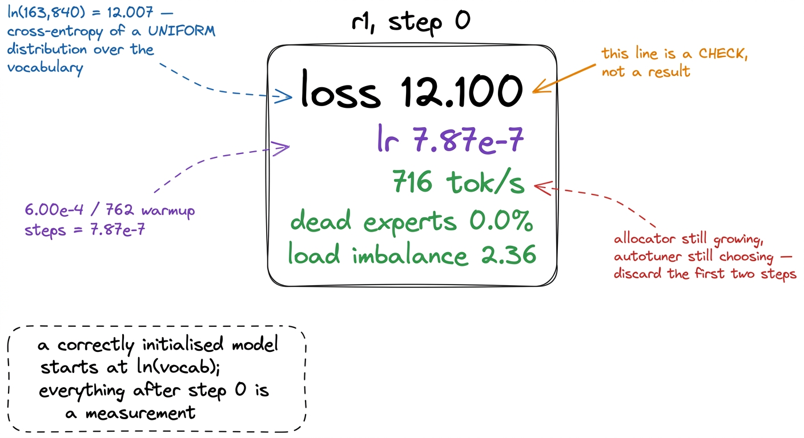
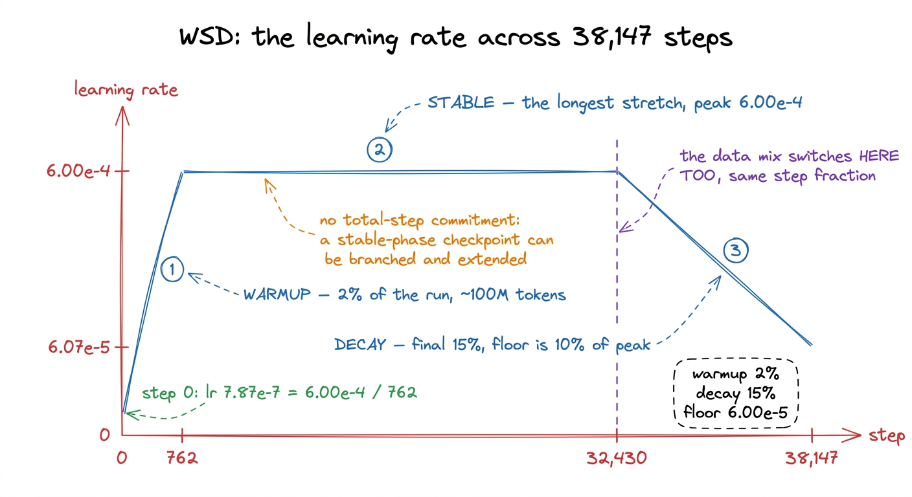
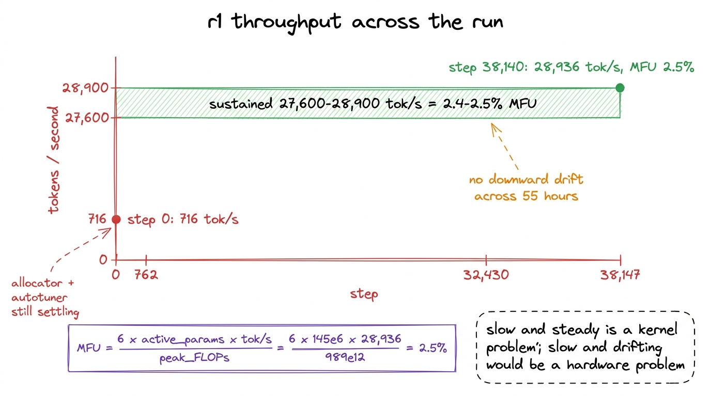
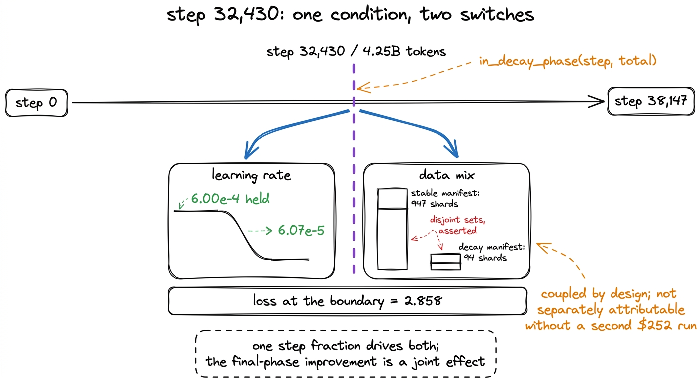
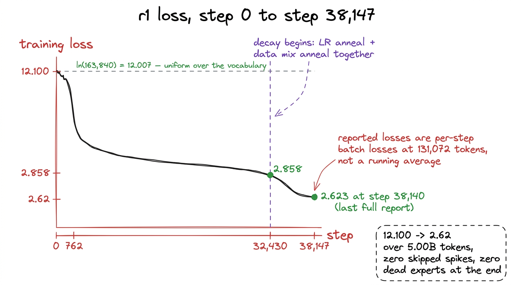
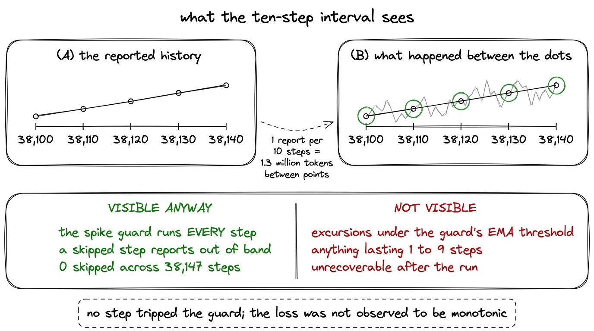
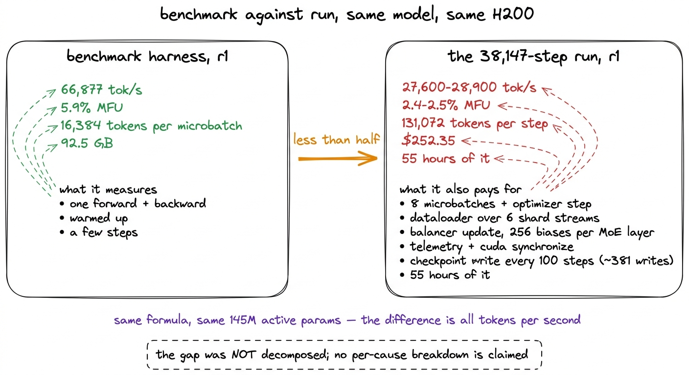

The loss curve, end to end
Starting at ln(163,840), the stable phase, the switch to the decay mix at step 32,430, zero skipped spikes and zero dead experts across 38,147 steps.
A training run reports on itself. Ours wrote a line of telemetry every ten steps for most of its life, carrying the loss, the learning rate, throughput, MFU, the gradient norm, the router's health and the money spent so far. This chapter reads r1's run end to end from those lines, in the order they arrived. The reasoning behind the schedule belongs to the training-loop chapter; here we are reading what came back.
The first line is the most useful one in the run, and it is not a result.
Step 0: loss 12.100, learning rate 7.87e-7, 716 tokens per second, dead experts 0.0%, load imbalance 2.36.
Step 0 is a check
A model that has learned nothing spreads its probability mass evenly across the vocabulary, and the cross-entropy of a uniform distribution over 163,840 tokens is ln(163,840) = 12.007. Our first reported loss was 12.100. The agreement says that the embedding matrix was initialised at a sensible scale, that the output projection was not producing large logits, that the labels were shifted correctly against the inputs, and that the loss being averaged is the loss we think it is. A step-0 loss of 4 would have meant the labels were leaking into the inputs; a step-0 loss of 40 would have meant an initialisation with the wrong variance. Neither failure announces itself later in any way that is easy to attribute.

figure rendering · The first line of telemetry from the run. Every value in it tests theThe 716 tokens per second in the same line is a number to read and discard. At step 0 the CUDA caching allocator is still growing its pools, the Triton autotuner is still choosing configurations for the fused kernels, and the dataloader has not filled anything. The measurement discipline established during the MFU investigation was to throw away the first two steps for exactly this reason, and 716 tok/s is about 2.5% of what the same loop sustained an hour later.1 The same discipline is why the loop checks its own initialisation before step 0 rather than inferring it from the first few telemetry lines. One of the four blockers in the released modeling code left KDA's timestep bias as uninitialised memory, which failed non-deterministically: at one point r2 trained normally while r1 returned NaN from step 0. A finite check on every parameter before the first forward pass turns that into an immediate error instead of a puzzling loss curve.
The router numbers in the same line are covered in the chapter on expert collapse and need one sentence here: dead experts 0.0% and imbalance 2.36 at step 0 describe a router that has no opinions yet, not a router that is working well.2 The same chapter records why entropy is the wrong gate to watch. Twenty steps into an earlier run, 94.5% of experts were receiving zero tokens while router entropy read 0.99 out of 1.0, because entropy is computed over mean routing scores while top-k selection concentrates regardless. The dead-expert fraction is the metric that would have caught it.
Three phases, and where each one starts
The schedule is warmup-stable-decay. Warmup takes the learning rate from near zero to peak over the first 2% of steps, the stable phase holds peak through the long middle, and the decay phase brings it down over the final 15% to a floor of one tenth of peak. The whole schedule is eight lines:
def wsd_lr(step: int, total: int, peak: float, warmup_frac: float = 0.02,
decay_frac: float = 0.15, min_frac: float = 0.1) -> float:
"""Warmup -> stable -> linear decay to `min_frac` x peak."""
warm = max(1, int(total * warmup_frac))
decay_start = int(total * (1.0 - decay_frac))
if step < warm:
return peak * (step + 1) / warm
if step < decay_start:
return peak
frac = (step - decay_start) / max(1, total - decay_start)
return peak * (1.0 - (1.0 - min_frac) * min(1.0, frac))At r1's 38,147 steps that gives a warmup of 762 steps and a first learning rate of 6.00e-4 / 762 = 7.87e-7, the value the run reported at step 0. Those 762 steps at 131,072 tokens each are roughly 100 million tokens, 2% of the budget, spent bringing the optimizer up to speed. The decay phase began at step 32,430, with 4.25 billion tokens already seen.

figure rendering · The learning-rate schedule as the run executed it. The three segmentsThe stable phase, read from throughput
The stable phase covers 83% of the steps, and nothing interesting happened in it, which is the desired outcome. The learning rate sat at 6.00e-4. Throughput settled into a band of 27,600 to 28,900 tokens per second at 2.4 to 2.5% MFU and stayed there for the rest of the run.
Those two numbers are the same number. MFU is defined as
MFU = 6 x active_parameters x tokens_per_second / peak_FLOPsand with r1's 145 million active parameters against an H200's roughly 989 TFLOP/s in bf16, 6 x 145e6 x 28,936 / 989e12 = 2.5%. The formula has no free choices once the active-parameter count is fixed, so throughput and MFU move together; reporting both is a convenience rather than two pieces of evidence.3 MFU uses active parameters, not total. A mixture-of-experts model would otherwise score a factor of seven higher on r1 simply by holding weights it does not use for a given token, and the number would stop meaning anything comparable to a dense run.
Two and a half percent is a low number and it is not defended here. The chapters on MFU work through sixteen numbered attempts at raising it, of which three worked, and they end at a kernel profile in which only about 12% of GPU time is matrix multiplication. Note that the profile, and most of the attempt log, was measured on r2, the 307-million-active rung above ours, on its own single H200; the conclusion drawn there is that the model is memory-bandwidth bound, and r1 shares the architecture that makes it so.
What this chapter can add is that the number was stable. The run cost $252.35 at $4.54 per hour, which is about 55 hours of card time, and across those 55 hours there was no downward drift, no degradation as checkpoints accumulated, and no step where throughput halved and stayed halved. A run that is slow and steady is a different problem from a run that is slow and drifting, and only the first can be attacked by optimising kernels.

figure rendering · Throughput over the run. The band is flat, which makes the MFU numberThe switch at step 32,430
At step 32,430 two things changed at once, and they changed together by construction. The learning rate began its linear descent, and the dataloader switched from the stable mix to the decay mix. Both are driven by the same step fraction in the same loop:
for step in range(start_step, total_steps):
# the LR schedule and the data mix switch together
want_decay = in_decay_phase(step, total_steps)
if want_decay and phase != "decay" and "decay" in loaders:
phase = "decay"
loader = loaders["decay"]
print(f"[step {step}] entering DECAY phase — switching to the anneal mix")
lr = wsd_lr(step, total_steps, peak_lr)Coupling them has a cost worth naming. When the learning rate anneals and the data distribution shifts at the same step, the run cannot afterwards attribute the improvement in the final phase to one or the other. Separating them would need two runs at $252 each, and the budget was not spent that way, so the effect is reported as a joint one.
The loss at the boundary was 2.858.

figure rendering · Both halves of the anneal begin at the same step because both are drivThe decay, and the final numbers
From step 32,430 the learning rate fell linearly toward a floor of 6.00e-5, one tenth of peak. The last full telemetry report, at step 38,140, read:
| field | value |
|---|---|
| loss | 2.623 |
| learning rate | 6.07e-5 |
| MFU | 2.5% |
| throughput | 28,936 tok/s |
| spend | $252.35 |
| dead experts | 0.0% |
| load imbalance | 4.0 |
| router entropy, minimum | 0.973 |
| gradient norm | 0.299 |
The learning rate reads 6.07e-5 rather than the 6.00e-5 floor because step 38,140 is seven steps short of the end, so the schedule was about 99.9% of the way through its descent.4 The floor exists because a linear decay all the way to zero spends its last thousands of steps making updates too small to matter, and because a checkpoint taken at a non-zero learning rate can be resumed and extended. Neither mattered for r1, which was never extended.
Loss fell from 2.858 at the phase boundary to 2.62 at the end. Held-out perplexity fell by 40% across the whole run and the steepest part of that fall sits inside this phase; the next chapter reports that series across twenty-four evaluation points.

figure rendering · The loss curve for the completed run. The bend after step 32,430 is thWhy neighbouring reports disagree
The reported losses near the end of the run do not descend cleanly from one report to the next; they oscillate around a flat trend. This is not instability and it is not a measurement error. Each reported loss is the loss of that single step's batch, averaged over the eight microbatches that make up the step, and nothing more. It is not a running average and it is not smoothed in any way.
A step's batch is 131,072 tokens drawn from six corpora whose per-token difficulty varies widely: final held-out perplexity by source runs from 5.42 on Python code to 37.74 on general web text, with fineweb-edu at 22.35 and finemath at 10.24 in between. A batch that happens to draw a larger share of easy, highly predictable text scores lower than one that does not, and at 131,072 tokens that effect is large enough to dominate the step-to-step change once the curve has flattened.
Two consequences follow. No single reported loss should be quoted to three decimal places as though it were the model's loss. And a plot of raw reported losses looks noisy at the end of a run precisely because the improvement has slowed: once the step-to-step gain is smaller than the batch-to-batch variance, the variance is all that is visible.
This book quotes 2.623 at step 38,140 as the final loss, because that is the last complete report the run produced, and rounds it to 2.62 in prose. It is the end of the run rather than the best point in a noisy sample, and quoting the lowest report instead would be a different claim from the one the run supports.5 The cleanest fix would be to report a windowed mean alongside the per-step loss, so the dashboard shows both the raw signal and its trend. Our loop does not do this; the spike guard maintains an EMA of the loss internally for its own threshold, but that EMA was never included in the telemetry payload.
What the telemetry can and cannot tell us about health
The run's health record is short and it is good. Across 38,147 steps: zero loss spikes skipped, dead-expert fraction 0.0% at the end, load imbalance rising gently from 2.36 to 4.0, router entropy minimum 0.973, and a gradient norm of 0.299 at the last report, having never diverged.
The zero-spike figure deserves a precise reading, because it is stronger than the ten-step reporting interval would suggest. The spike guard runs on every step, not on reported steps: it compares each step's loss against its own exponential moving average, skips the optimizer update if the loss exceeds that average by the configured multiple, and reports the skip immediately, outside the normal logging interval.6 Reporting the skip was a fix rather than the original behaviour. The first version continued to the next step without emitting telemetry, so the spiking or NaN loss never reached the monitor and every loss-based gate was blind to exactly the events the spike protocol exists to handle. A spike large enough to be skipped therefore could not have hidden between two reports, and zero skips is a per-step fact.
What the interval hides is everything smaller than the guard's threshold. An excursion lasting one to nine steps that stayed under the guard's multiple of the EMA is invisible in the history and cannot be recovered after the fact. We do not claim the loss was monotonic between reports; we claim that no step tripped a threshold set against a running average of the loss, and that the reported points show no trend break.
The guard's state is also part of what a resume restores. The checkpoint written every 100 steps carries the model weights, the optimizer moments, the dataloader cursor, four random-number generator states, the tokens seen, the spend to date and the spike guard's EMA, so a run that resumes does not restart the guard from a cold average and skip healthy steps while it warms up. r1 was never interrupted, so none of that machinery was exercised on this run; it is described here because the telemetry it protects is what this chapter reads.

figure rendering · The reporting interval and the spike guard have different resolutions.The benchmark and the run disagree by a factor of two
One gap in this run's numbers is large enough that leaving it unexplained would be a defect in the report. Our own benchmark harness measured r1 at 66,877 tokens per second and 5.9% MFU, at 16,384 tokens per microbatch and 92.5 GB of memory. The run that actually happened, on the same model and on a single H200 with no sharding of any kind, sustained 27,600 to 28,900 tok/s at 2.4 to 2.5%. Less than half. Both figures come from the same formula and the same 145 million active parameters, so the entire discrepancy is throughput.
A benchmark and a run measure different objects. The benchmark measures one microbatch's forward and backward pass, repeated after a warmup, with nothing else in the loop. A step of the real run pays for:
- eight microbatches, not one, with a gradient-norm clip and an optimizer step at the end of them;
- the dataloader, reading and collating tokens from six shard streams on a real filesystem rather than replaying one resident tensor;
- the balancer update, which reads per-expert load off the gate and writes 256 bias values per MoE layer;
- telemetry, including a synchronising
torch.cuda.synchronize()on every step; - checkpoint writes every 100 steps, roughly 381 across the run, each blocking the loop while it writes weights, optimizer moments, the dataloader cursor and four random-number generator states, then commits the volume;
- and 55 hours of running, against a benchmark reporting the mean of a handful of steps taken while the card is fresh.
We did not decompose that gap into contributions. It would have taken ablation runs the budget did not have, and any breakdown offered here would be an estimate presented in the register of a measurement. What we can say is which figure describes what: 66,877 tok/s is the model's cost on this card under ideal conditions, and 28,936 tok/s is the cost of training it. The second is the number the $252.35 was charged against.

figure rendering · The two throughput figures this book reports for r1, and what the runWhat the curve is evidence for
The run went from 12.100, a correctly initialised model knowing nothing, to 2.62 over five billion tokens and $252.35, without a skipped step, without losing an expert, and with a gradient norm that fell to 0.299 rather than climbing. It did all of that on one H200, on one process, with no sharded state to keep consistent; the FSDP2 work and the three distributed bugs described later in the book belong to the flagship, whose own run failed at step 890 of 76,294 with 69.5% dead experts. That is a clean run, and a clean run is the precondition for the evaluation chapter meaning anything: benchmark scores taken from a run that spiked, stalled or silently collapsed measure the incident rather than the recipe.
What the curve is not evidence for is quality. Training loss is not comparable across tokenizers, data mixes or models, and 2.62 on our corpus and K3's vocabulary cannot be placed against any published number. It says the model fitted this data better over time. Whether the resulting model can do anything is a separate question, answered by held-out perplexity and by benchmarks, which the next chapter reports across twenty-four points taken during the run rather than once at the end.